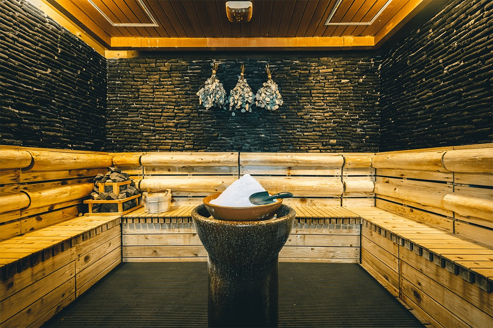
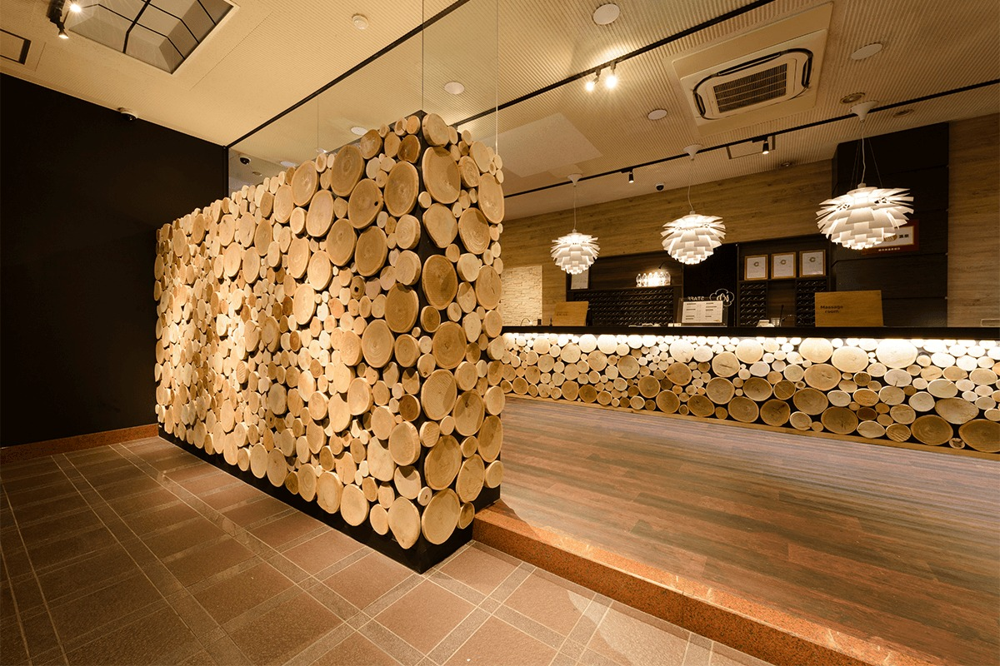
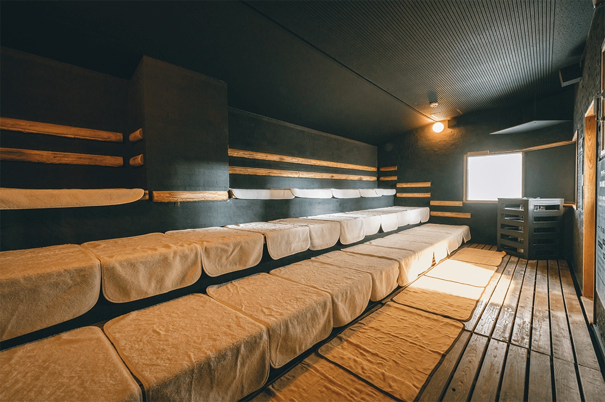
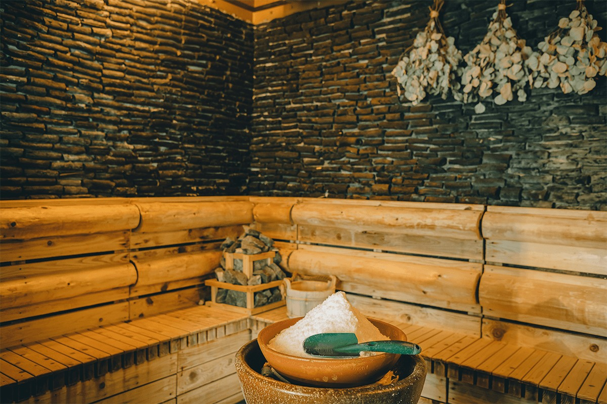
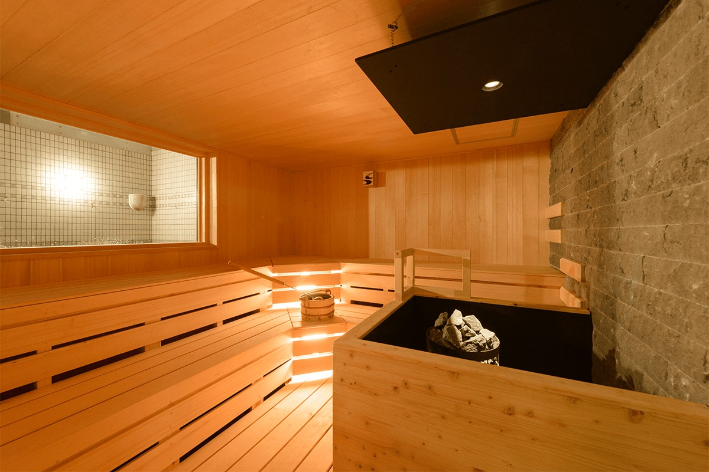
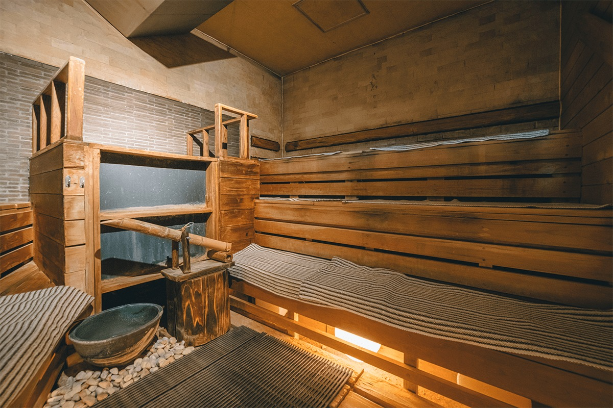
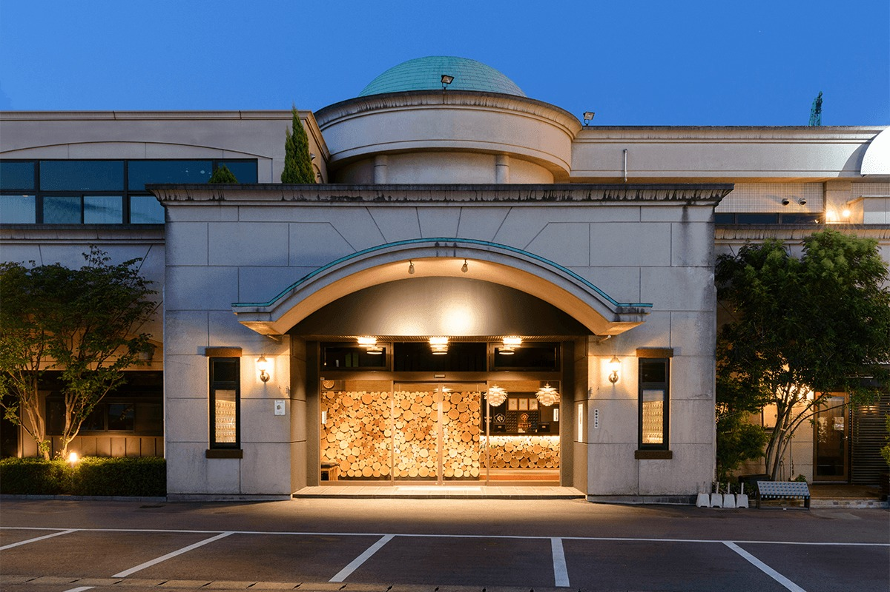
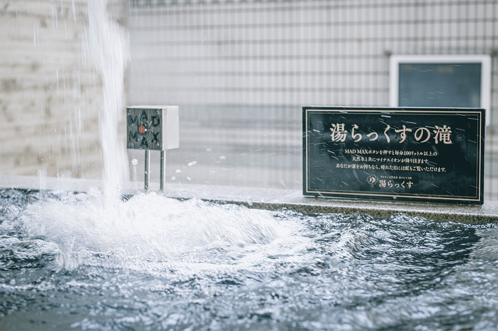
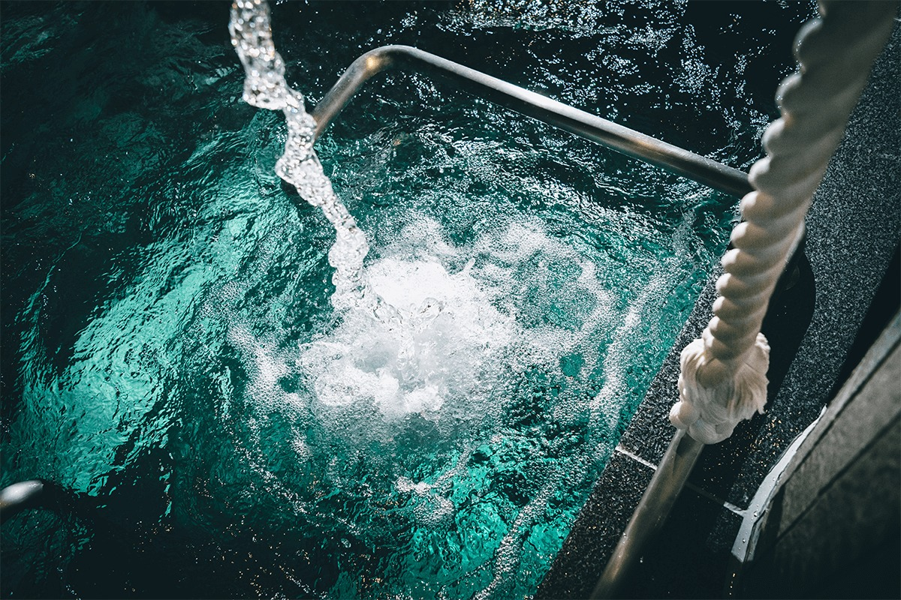
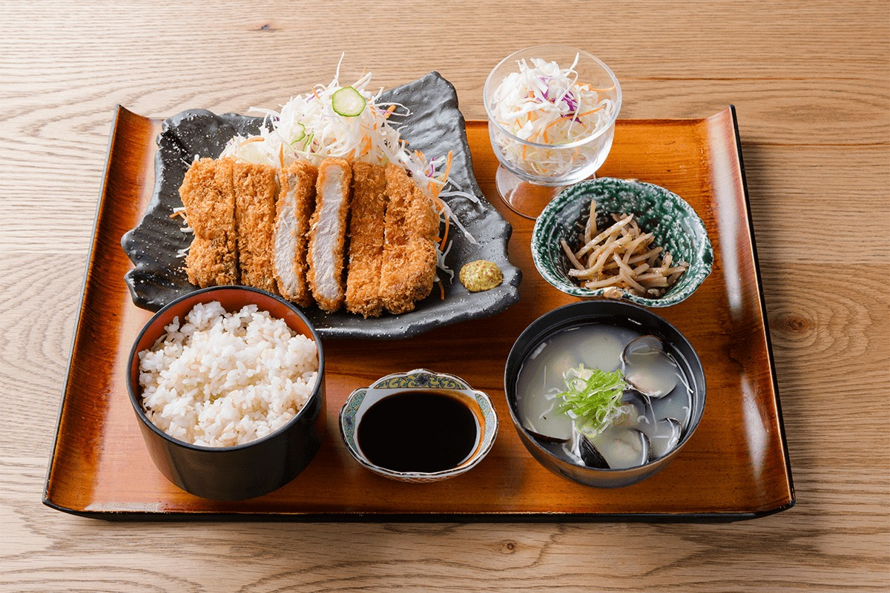

Префектура Кумамото · город Кумамото · сауна и онсэн
YULAX в Кумамото: сауны, ауфгус каждый час и онсэн, который течёт даже из душа

Когда холодает, хочется прогреться до самых костей. В городе Кумамото для этого есть YULAX, банный комплекс, который японские любители саун знают по всей стране.
Место
Баня, которую построил любитель саун
YULAX стоит в центральном районе города Кумамото, и это единственный природный онсэн в этом районе. Историю комплекса начал его основатель, большой любитель сауны: увлечение зашло так далеко, что он построил собственную баню. Сауна и холодная купель с самого начала были здесь главным, и местные так и говорят: YULAX значит сауна.
После землетрясения в Кумамото в 2016 году комплекс пришлось капитально ремонтировать. Основателя к тому времени уже не было в живых, и новая команда решила вернуться к его замыслу: ванны, которые потеряли популярность, переделали в сауны разных типов. Полное название комплекса так и звучит: «Сауна и природный онсэн YULAX». В подборке лучших саун Японии на 2021 год он открывал список.
Концепция
Отпуск для Косаку Симы
Интерьер придумывали с оглядкой на мангу «Катё Сима Косаку». Её герой, офисный служащий Косаку Сима, взял оплачиваемый отпуск и приехал отдохнуть от работы: такую картинку держали в голове, когда выбирали всё в здании. Какие блюда он заказал бы? Удобно ли ему будет в этом кресле? Какой свет, какая громкость у телевизора? Мужчин здесь приглашают почувствовать себя Косаку Симой, а женщин его возлюбленной Кумико Омати.

Ауфгус
Прогреться до кончиков ногтей
Девиз здешней сауны звучит так: «прогреть до кончиков ногтей». Каждый день с 12:00 до часу ночи в сауне раз в час проводят ауфгус. Пот выступает за считаные минуты, и многие гости после первого раза возвращаются снова. Пар пахнет лёгкой ароматической смесью.

Ауфгус и лёйлю родственники. Лёйлю это финский способ париться: воду, часто с ароматическим маслом, льют на раскалённые камни, пар поднимает ощущаемую температуру, и тело сильнее потеет. В Германии то же самое называют ауфгусом и проводят в общественных саунах как маленькое представление: банщик полотенцем гонит горячий воздух на гостей. Финны парятся в тишине, немцы превратили пар в шоу.
Пар
«Оасо»: парилка над горячим источником
Самая необычная парилка YULAX называется «Оасо», то есть «Великий Асо». Под полом течёт вода из собственного горячего источника. Если плеснуть воду в отмеченное место, пар и горячий туман вырываются из щелей между досками, как при извержении. Принцип тот же, что при варке яиц в онсэне. Жар идёт и снизу, и от полок, получается настоящая паровая «адская баня», и при этом в ней комфортно даже тем, кто плохо переносит сухой жар.

В парилке стоит чаша с солью. Если натереться ею, соль хорошо впитывается в кожу с раскрытыми порами. Считается, что она помогает коже, усиливает потоотделение и разгоняет кровь.
Тишина
Медитативная сауна
Для тех, кто хочет париться в своём ритме, есть медитативная сауна. Печь для неё, Harvia Modulo из премиальной линейки финской марки, делают почти на заказ, и её привезли прямо из Финляндии. Такие печи стоят в лучших отелях и спа Европы, а в Японии, да и, возможно, во всей Азии, она есть только здесь.

Свет ставил известный на Кюсю светодизайнер. Один луч падает точно на печь, ещё немного мягкого света поднимается от середины полок, и к вечеру комната сама настраивает на медитацию. Продуман и звук: едва слышные звуки природы и музыка помогают сосредоточиться на себе. Если мысли разбегаются, советуют слушать только этот тихий фон. Это приём из практики осознанности, который называют упражнением с изюмом.
Веник из берёзы
У входа в медитативную сауну стоит кадка, в которой замочены берёзовые веники. Воду из неё, настоянную на берёзе, можно лить на камни, и по сауне расходится аромат сандала. Веники висят и в «Оасе», а ещё их можно опустить в холодную купель, чтобы вода стала свежее.

Веником можно похлопать себя по телу и спине, устроив самомассаж: говорят, он ещё и дезинфицирует. Если сделать это перед выходом из бани, лёгкий запах сандала останется на коже до самого дома. Правил нет, неправильно пользоваться веником нельзя, так что пробуйте как хочется.
Вода
Город, где из крана течёт родниковая вода

Кумамото славится конской сашими и вулканом Асо, но не меньше гордится своей водой. Родники есть не только в районах Асо и Кикути: в самом городе их много, и один из самых известных находится в парке Суйдзэндзи, недалеко от YULAX. Город Кумамото единственный из крупных городов Японии, где водопровод целиком питается подземными водами, и даже в мире таких примеров почти нет.
Поэтому вода в холодных купелях бань Кумамото везде чистая. Водопроводная вода качества минеральной считается здесь ценным ресурсом для туризма, и YULAX через свою холодную купель старается привлечь к ней внимание.
Онсэн
Источник, который можно пить

Четверть века YULAX знали как «природный онсэн, мягкий как шёлк». В сентябре 2015 года источник пробурили заново, и воды по-прежнему хватает на все ванны. Все 25 лет онсэн здесь стопроцентный, без добавления водопроводной воды, и все эти годы воду разрешено пить.
Источник поднимается с глубины 1000 метров. Он лежит на линии подземной горячей жилы, которая соединяет вулканы Ундзэн, Кимподзан и Асо. Вода кальциево-натриевая хлоридная: она хорошо прогревает тело, улучшает кровообращение и расслабляет мышцы, а после купания тепло держится долго и человек не мёрзнет.
Даже из душа течёт вода из источника. Краны здесь не автоматические, какие обычно ставят в общественных банях, а ручные, как дома, так что под душем можно стоять сколько хочется. Напор нарочно сделали сильным.
Есть и MADMAX: стоит нажать кнопку на стене, и на голову обрушивается водопад из природной воды Кумамото. Кровь бежит по всему телу, настроение поднимается, а в голове становится приятно пусто.

Еда
Сауна-меси в духе медленной еды
После бани в YULAX можно поесть. Кухня следует идеям медленной еды, движения, которое начиналось в Италии: местные продукты, разнообразие, забота о здоровье и природе. Здесь едят без церемоний, прямо после парилки.

YULAX
- Адрес
- префектура Кумамото, город Кумамото, район Тюо, Хондзё-мати, 722
- Телефон
- +81 96-362-1126
- Как добраться
- около 5 минут пешком от станции Хэйсэй (JR), от станции Кумамото около 5–8 минут на такси
- Сайт
- yulax.info